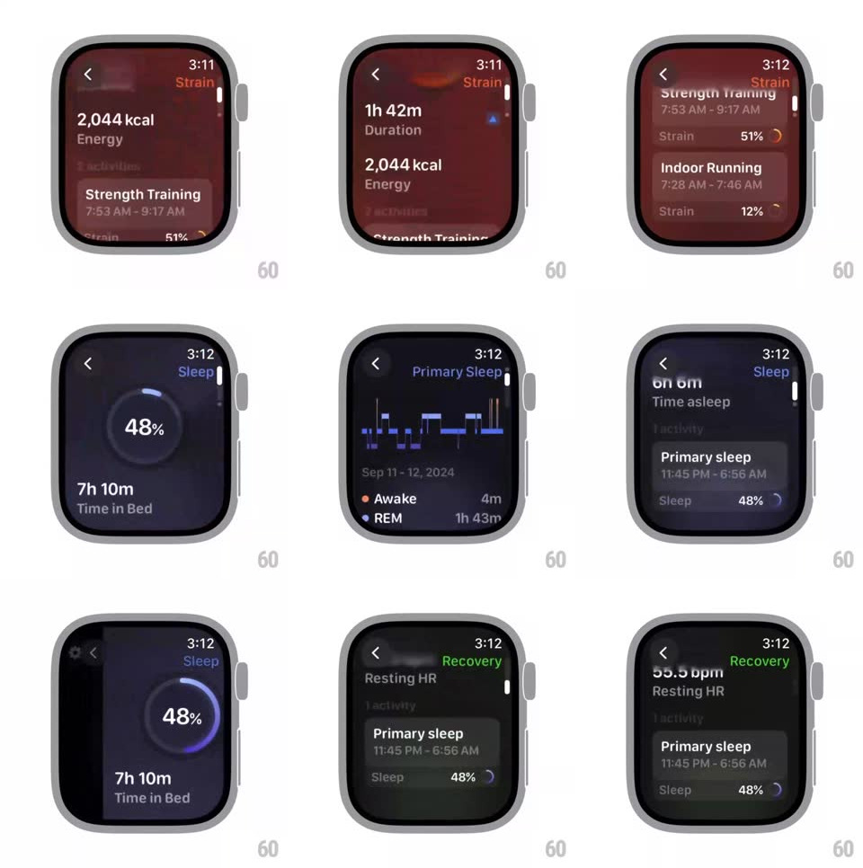

Media
Frame-by-frame

Rebuild this interaction 1:1: Bevel's watchOS metrics navigation - vertical scrolls through health pages with elastic resistance at the ends, big animated rings for each score (Strain 61%, Sleep 48%, Recovery 77%), and horizontal swipes that page between metric categories with the colored label updating top-right.

Rebuild this interaction 1:1: Bevel's watchOS metrics navigation - vertical scrolls through health pages with elastic resistance at the ends, big animated rings for each score (Strain 61%, Sleep 48%, Recovery 77%), and horizontal swipes that page between metric categories with the colored label updating top-right.
## Integration
Integration: stack-agnostic spec - springs given as stiffness/damping, timed motions as duration + curve; map every value to your framework and animation library of choice.
## Scene
Dark watch screens: overview with three small rings (September 12); per-metric pages with a header value ("2,044 kcal Energy", "8h 6m Time asleep", "107.6 ms Resting HRV"), an activity card ("Strength Training 7:53 AM - 9:17 AM", "Primary sleep 11:45 PM - 6:56 AM"), a bottom score row ("Strain 51%"); full-screen ring pages ("61% 1h 42m Duration", "48% 7h 10m Time in Bed", "77%"); a stage breakdown list (Awake 4m, REM 1h 43m, Core 3h 13m, Deep 1h 9m, "Poor").
## Motion spec
Pattern: paged vertical scroll + horizontal category swipe with elastic edges.
- Vertical drag: content tracks 1:1; at the first/last page extra drag stretches with rubber-band resistance (x^0.55) and snaps back (spring ~320/24, ~350ms) on release.
- Page changes settle with a scroll snap (spring ~300/26); a small page dot indicator tracks position.
- Each ring page: the ring redraws from 0 to its value on entry (trim, 700ms ease-out) with the center percent counting up in sync.
- Horizontal swipe: the next metric slides in from the side (300ms ease-in-out) while the top-right label crossfades + re-colors (Strain orange, Sleep purple, Recovery green); the entire page background tint shifts with the category.
- List rows (sleep stages) stagger in 40ms apart, fading + rising 10px.
## Calibration
- Ring color always matches the category label color.
- Elastic resistance is identical at top and bottom; no bounce mid-list.
## Reduced motion
Page changes crossfade; rings render filled without the draw.
## Don't miss
- The header value blurs/fades slightly during fast scrolls and sharpens on settle.
- The back chevron top-left stays fixed through every transition.